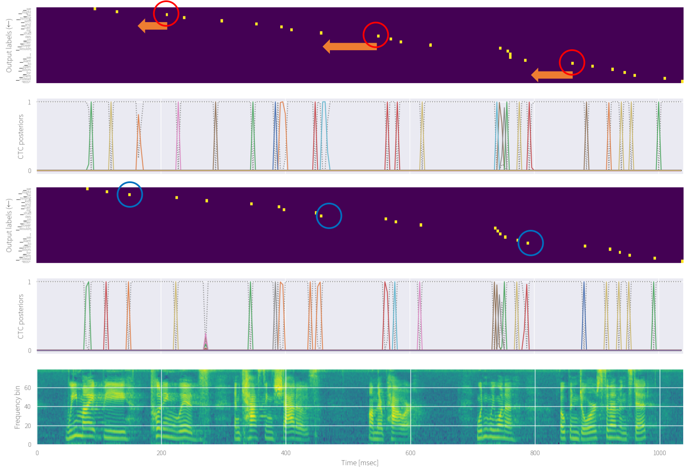
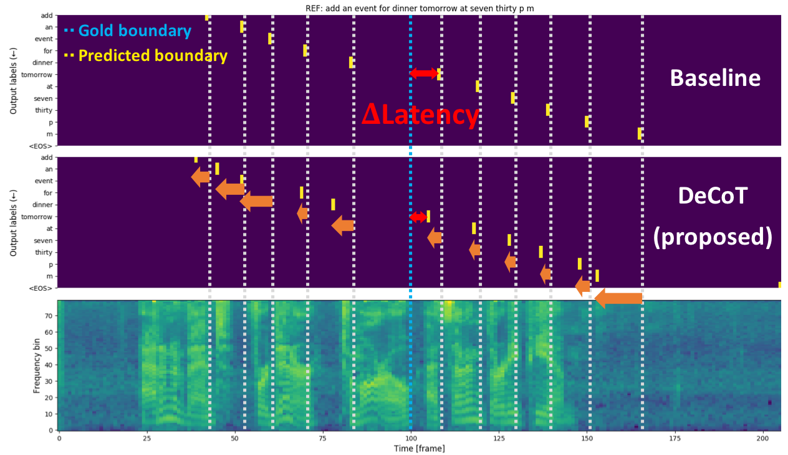

News😀
”Orthros: Non-autoregressive End-to-end Speech Translation with Dual-decoder” [arxiv] (1st-author)
”Improved Mask-CTC for Non-Autoregressive End-to-End ASR” [arxiv] (co-author)
”Recent Developments on ESPnet Toolkit Boosted by Conformer” [arxiv] (co-author)
”CTC-synchronous Training for Monotonic Attention Model” [arxiv] [slide] (1st-author)
”Enhancing Monotonic Multihead Attention for Streaming ASR” [arxiv] [slide] (1st-author)
”Distilling the Knowledge of BERT for Sequence-to-Sequence ASR” (co-author)
”End-to-end speech-to-dialog-act recognition” [arxiv] (co-author)
”ESPnet-ST: All-in-One Speech Translation Toolkit” [arxiv] [slide] (1st-author)
”Minimum Latency Training Strategies for Streaming Sequence-to-Sequence ASR” [arxiv] [slide] (1st-author)
About Me
 3rd-year Ph.D. student at Graduate School of Informatics, Kyoto University, Kyoto, Japan.
3rd-year Ph.D. student at Graduate School of Informatics, Kyoto University, Kyoto, Japan.My CV is available here.
Email (office): inaguma [at] sap.ist.i.kyoto-u.ac.jp
Email (private): hiro.mhbc [at] gmail.com
Address (office): Research Building No.7 Room 407, Yoshida-honmachi, Sakyo-ku, Kyoto-shi, Kyoto, 606-8501, Japan
Google Scholar | GitHub | LinkedIn | Twitter
Research interests🤔
Automatic speech recognition (ASR)- End-to-end speech recognition
- Multilingual end-to-end speech recognition
- Language modeling
- Online streaming ASR
- End-to-end speech translation
- Multilingual end-to-end speech translation
Research topic🧐
Monotonic Multihead Atteniton for Streaming ASR CTC-synchronous training for monotonic chunkwise attention (MoChA)
Proposed a new training method, CTC-synchronous training (CTC-ST), for MoChA to learn reliable alignments (token boundaries) by leveraging CTC spikes as reference alignments. MoChA with CTC-ST is very robust to long utterances. CTC-ST can also bring out the full potential of SpecAugment for MoChA. CTC is trained by sharing the same encoder and thus training is still end-to-end.See details in [arxiv].

Tackled the delayed token generation problem to minimize perceived latency in online streaming sequence-to-sequence ASR models. Proposed latency reduction methods by leveraging external hard alignments extracted from the conventional hybird ASR systems.See details in [Inaguma et al., ICASSP2020].
 Proposed an effective multilingual training into the end-to-end speech translation (E2E-ST) task, and showed significant improvements of translation performances compared to conventional bilingual models.
Proposed an effective multilingual training into the end-to-end speech translation (E2E-ST) task, and showed significant improvements of translation performances compared to conventional bilingual models.
See details in [Inaguma et al., ASRU2019].
 Proposed an adaptation starategy of the language-independent end-to-end ASR model based on a single sequence-to-sequence architecture to unseen languages by integrating information from the external language model trained on the target language.
Proposed an adaptation starategy of the language-independent end-to-end ASR model based on a single sequence-to-sequence architecture to unseen languages by integrating information from the external language model trained on the target language.
See details in [Inaguma et al., ICASSP2018].
 Proposed a sequence-to-sequence ASR model which directly generates whole word tokens, and resolves the out-of-vocabulary (OOV) problem by referring to the character-level hypothesis obtained from the character-level decoder by sharing the same encoder.
Proposed a sequence-to-sequence ASR model which directly generates whole word tokens, and resolves the out-of-vocabulary (OOV) problem by referring to the character-level hypothesis obtained from the character-level decoder by sharing the same encoder.
See details in [Ueno et al., ICASSP2018], [Inaguma et al., SLT2018], [Mimura et al., SLT2018].
 Incorporated social signal detection (SSD) task (e.g., laughter, filler, back-chennels, and disfluencies) into the end-to-end ASR paradigm, and proposed a unified framework for both tasks.
Incorporated social signal detection (SSD) task (e.g., laughter, filler, back-chennels, and disfluencies) into the end-to-end ASR paradigm, and proposed a unified framework for both tasks.
See details in [Inaguma et al., ICASSP2018], [Inaguma et al., Interspeech2017].
Education🎓
Ph.D. in Computer Science, Kyoto University, Kyoto, Japan (April 2018 - Present)- Department of Intelligence Science and Technology, Graduate School of Informatics
- Supervisor: Prof. Tatsuya Kawahara
- Department of Intelligence Science and Technology, Graduate School of Informatics
- Thesis title: Joint Social Signal Detection and Automatic Speech Recognition based on End-to-End Modeling and Multi-task Learning
- Supervisor: Prof. Tatsuya Kawahara
- Supervisor: Prof. Tatsuya Kawahara
Work experiences💻
Microsoft Research, Redmond, WA, USA, Research Internship (July 2019 - October 2019)- Mentor: Yifan Gong, Jinyu Li, Yashesh, Gaur, and Liang Lu
- Worked on end-to-end speech recognition and translation
- Participated in the JSALT workshop (topic: multilingual end-to-end speech recognition)
- Participated in IWSLT2018 end-to-end speech translation evaluation campaign
- Mentor: Prof. Shinji Watanabe
- Worked on end-to-end ASR systems
- Mentor: Gakuto Kurata and Takashi Fukuda
Awards & Honors 🏆
Awards- Yamashita SIG Research Award, from Information Processing Society of Japan (IPSJ), March 2019.
[link]
Paper title: "An End-to-End Approach to Joint Social Signal Detection and Automatic Speech Recognition" - Yahoo! JAPAN award (best student paper), from SIG-SLP, June 2018. [link]
- Student award, from the Acoustical Society of Japan (ASJ), March 2018. [link]
- Student award, from the 79th of National Convention of Information Processing Society of Japan (IPSJ), March 2017
- Microsoft Research Asia Ph.D. Fellowship, from Microsoft Research Asia (MSRA), October 2019. [link]
- Research Fellowship for Young Scientists (DC1), from Japan Society for the Promotion of Science (JSPS), April 2018 - March 2021
Talk 📢
- NLP friends, Dec. 2020. [link]
Preprint
-
”Orthros: Non-autoregressive End-to-end Speech Translation with Dual-decoder”
Hirofumi Inaguma, Yosuke Higuchi, Kevin Duh, Tatsuya Kawahara, Shinji Watanabe
[arxiv]
-
”Improved Mask-CTC for Non-Autoregressive End-to-End ASR”
Yosuke Higuchi, Hirofumi Inaguma, Shinji Watanabe, Tetsuji Ogawa, Tetsunori Kobayashi
[arxiv]
-
”Recent Developments on ESPnet Toolkit Boosted by Conformer”
Pengcheng Guo, Florian Boyer, Xuankai Chang, Tomoki Hayashi, Yosuke Higuchi, Hirofumi Inaguma, Naoyuki Kamo, Chenda Li, Daniel Garcia-Romero, Jiatong Shi, Jing Shi, Shinji Watanabe, Kun Wei, Wangyou Zhang, Yuekai Zhang
[arxiv]
International conference (Review paper, first author)
-
”CTC-synchronous Training for Monotonic Attention Model”
Hirofumi Inaguma, Masato Mimura, Tatsuya Kawahara
[arxiv] [slide] [ISCA online archive]
INTERSPEECH 2020 (Acceptance Rate: 47.0%)
-
”Enhancing Monotonic Multihead Atteniton for Streaming ASR”
Hirofumi Inaguma, Masato Mimura, Tatsuya Kawahara
[arxiv] [demo] [slide] [ISCA online archive]
INTERSPEECH 2020
-
”ESPnet-ST: All-in-One Speech Translation Toolkit”
Hirofumi Inaguma, Shun Kiyono, Kevin Duh, Shigeki Karita, Nelson Yalta, Tomoki Hayashi and Shinji Watanabe
[arxiv] [slide] [ACL Anthology]
ACL 2020 System Demonstrations -
”Minimum Latency Training Strategies for Streaming Sequence-to-Sequence ASR”
Hirofumi Inaguma, Yashesh, Gaur, Liang Lu, Jinyu Li, and Yifan Gong
[arxiv] [slide] [IEEE Xplore]
ICASSP 2020 (Acceptance Rate: 47%, Oral) -
”Multilingual End-to-End Speech Translation”
Hirofumi Inaguma, Kevin Duh, Tatsuya Kawahara, and Shinji Watanabe
[arxiv] [pdf] [poster] [IEEE Xplore]
ASRU 2019 (Acceptance Rate: 144/299=48.1%) -
”Transfer Learning of Language-Independent End-to-End ASR with Language Model Fusion”
Hirofumi Inaguma, Jaejin Cho, Murali Karthick Baskar, Tatsuya Kawahara, and Shinji Watanabe
[arxiv] [pdf] [poster] [IEEE Xplore]
ICASSP 2019 (Acceptance Rate: 1774/3815=46.5%) -
”Improving OOV Detection and Resolution with External Language Models in Acoustic-to-Word ASR”
Hirofumi Inaguma, Masato Mimura, Shinsuke Sakai, and Tatsuya Kawahara
[arxiv] [pdf] [poster] [IEEE Xplore]
SLT 2018 (Acceptance Rate: 150/257=58.3%) -
”The JHU/KyotoU Speech Translation System for IWSLT 2018”
Hirofumi Inaguma, Xuan Zhang, Zhiqi Wang, Adithya Renduchintala, Shinji Watanabe and Kevin Duh
[pdf]
IWSLT 2018 -
”An End-to-End Approach to Joint Social Signal Detection and Automatic Speech Recognition”
Hirofumi Inaguma, Masato Mimura, Koji Inoue, Kazuyoshi Yoshii, and Tatsuya Kawahara
[pdf] [poster] [IEEE Xplore]
ICASSP 2018 (Acceptance Rate: 1406/2830=49.7%) -
”Social Signal Detection in Spontaneous Dialogue Using Bidirectional LSTM-CTC”
Hirofumi Inaguma, Koji Inoue, Masato Mimura, and Tatsuya Kawahara
[pdf] [poster] [ISCA online archive]
INTERSPEECH 2017 (Acceptance Rate: 799/1582=52.0%)
-
”Distilling the Knowledge of BERT for Sequence-to-Sequence ASR”
Hayato Futami, Hirofumi Inaguma, Sei Ueno, Masato Mimura, Shinsuke Sakai Tatsuya Kawahara
[arxiv] [ISCA online archive]
INTERSPEECH 2020 -
”End-to-end speech-to-dialog-act recognition”
Trung V. Dang, Tianyu Zhao, Sei Ueno, Hirofumi Inaguma, Tatsuya Kawahara
[arxiv] [ISCA online archive]
INTERSPEECH 2020 -
”A Comparative Study on Transformer vs RNN in Speech Applications”
Shigeki Karita, Nanxin Chen, Tomoki Hayashi, Takaaki Hori, Hirofumi Inaguma, Ziyan Jiang, Masao Someki, Nelson Enrique Yalta Soplin, Ryuichi Yamamoto, Xiaofei Wang, Shnji Watanabe, Takenori Yoshimura, Wangyou Zhang
[arxiv] [IEEE Xplore]
ASRU 2019 -
”Language Model Integration Based on Memory Control for Sequence to Sequence Speech Recognition”
Jaejin Cho, Shinji Watanabe, Takaaki Hori, Murali Karthick Baskar, Hirofumi Inaguma, Jesus Villalba, Najim Dehak
[arxiv] [IEEE Xplore]
ICASSP 2019 -
”Leveraging Sequence-to-Sequence Speech Synthesis for Enhancing Acoustic-to-Word Speech Recognition”
Masato Mimura, Sei Ueno, Hirofumi Inaguma, Shinsuke Sakai, and Tatsuya Kawahara
[pdf] [IEEE Xplore]
SLT 2018 -
”Acoustic-to-Word Attention-Based Model Complemented with Character-level CTC-Based Model”
Sei Ueno, Hirofumi Inaguma, Masato Mimura, and Tatsuya Kawahara
[pdf] [IEEE Xplore]
ICASSP 2018